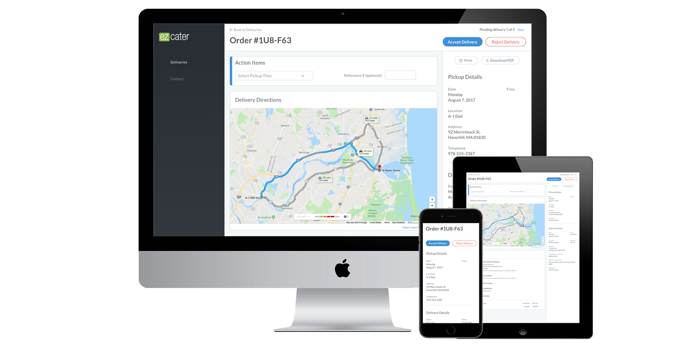
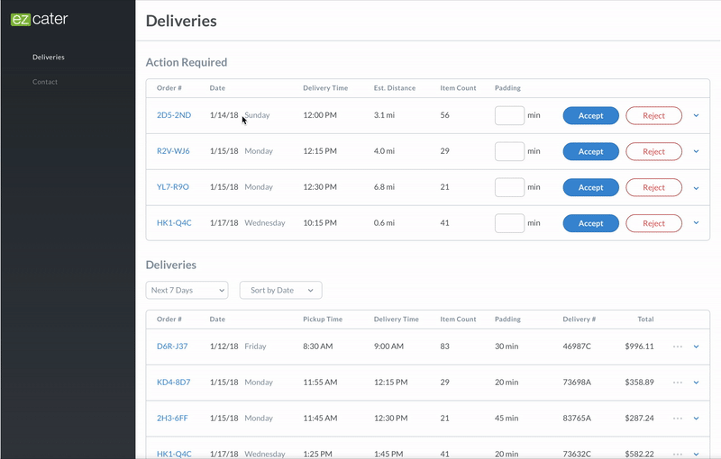

Putting Vendors in Control
Eliminating user error by handing over delivery management from customer service reps
to the businesses themselves

As a leading catering delivery company in Boston with almost 500 employees, ezCater had already established itself as a successful company. However, as it grew larger it’s already sizable customer service team was becoming overloaded with requests from users. They served as the conduit between companies and restaurants, and between restaurants and delivery services. They would review incoming requests and distribute them amongst the correct businesses and then pair each order with a third-party delivery service (when a restaurant did not offer it themselves). While it was clear that even with their large CS team this was not a scalable approach, there was no mechanism in place to solve the issue.
I was brought on to help design a process that could help assuage the pressure on the CS team by moving the process of third-party acceptance and rejection from the CS team to the services themselves. What seemingly should have been a simple transfer of roles I came to realize was made more difficult because of the amount of work the CS team handled on their end: triaging peak delivery times to ensure correct delivery and providing detailed instructions and directions to the services for delivery.

Working directly with CS team members, I learned the necessary requirements that must be transferred. I was then able to conduct extensive user interviews with these third-party delivery managers and drivers to understand their roles and how they would best adapt to handling the new responsibilities. With this information I was able to start wireframing what this portal might look like and the process of how a user might navigate it.
After iterating with feedback from other design team and CS team members, I refined the approved designs and put them in Invision to conduct testing with the third-party delivery users, using that feedback to iron out any additional functionality that could be improved upon. The resulting product allowed for a direct connection between third-party delivery services and restaurants. A restaurant would receive and accept an order and the delivery service would have a queue of incoming requests in their portal. They would be able to accept or reject any of these requests, as well as view upcoming and past deliveries, and directly receive all the information required for them to complete an order. This allowed for a complete order management system which they could sync with their own internal records and streamline the entire process. Additionally, this system projected a 20% easement on ezCater’s CS team, allowing their bandwidth to be used more strategically and for more human-necessitated tasks.